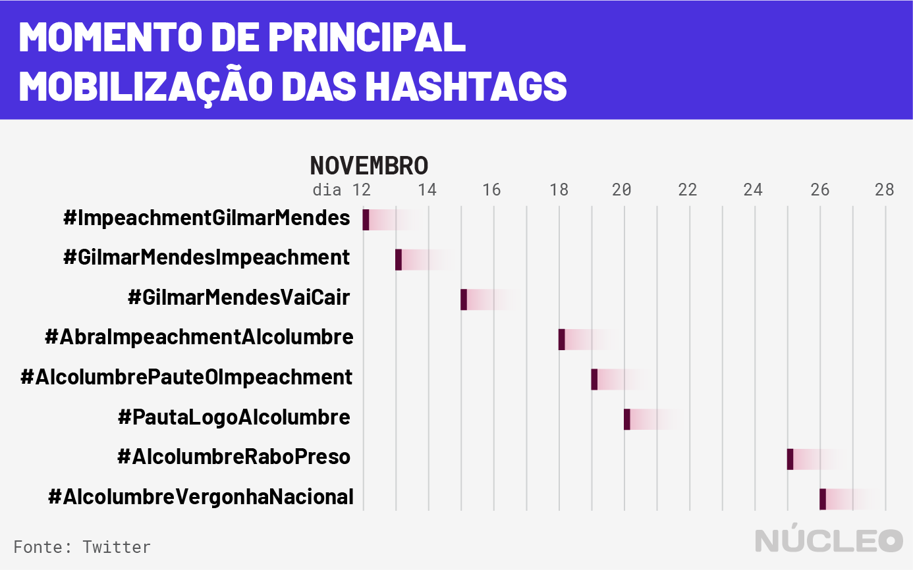
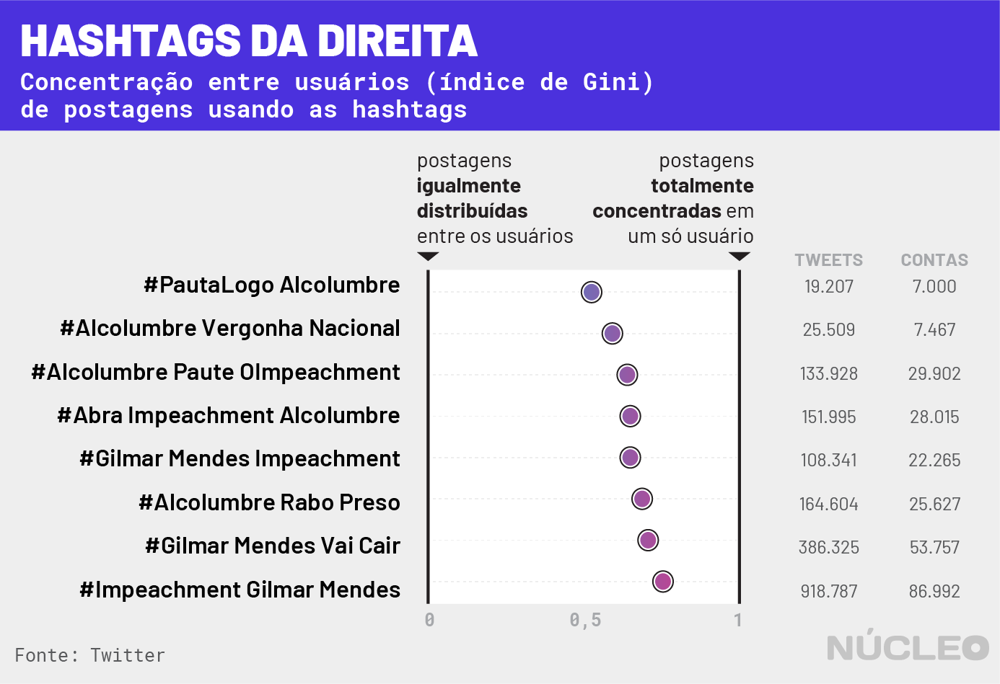
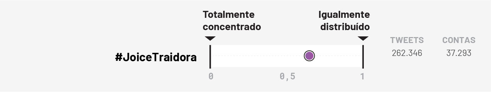
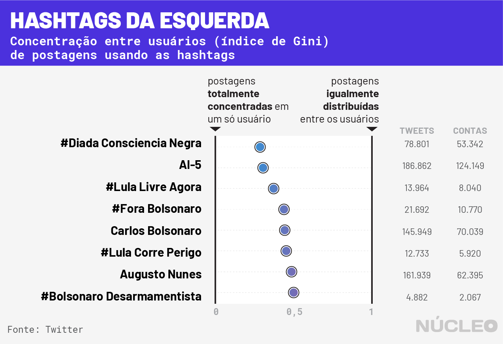

Em novembro de 2019, um curioso e raro evento nas redes sociais envolveu o ministro do STF Gilmar Mendes: ele foi alvo de uma campanha no Twitter tão coordenada que conseguiu ficar no topo dos trending topics uma semana inteira. A campanha pedia pelo impeachment do magistrado.
A grande sacada desse movimento teve duas facetas: a primeira foi a alternância de hashtags à medida que as anteriores perdiam força, fazendo o assunto permanecer sempre “popular”. A segunda foi contar uma rede de perfis nas redes sociais (não necessariamente robôs) que concentrava bastante o uso das hashtags, seja via tuíte ou retuíte.
O Núcleo analisou 3,6 milhões tuítes e retuítes no Twitter, a partir de buscas por 18 hashtags e três termos diferentes, e calculou o quão concentrados foram os resultados encontrados – ou seja, como poucos perfis foram responsáveis por muitos tuítes em alguns casos, especialmente na direita. Note que por essa análise não é possível determinar a operação de bots, apenas a concentração de muitas publicações por poucos usuários da rede social.
– Leia o posicionamento do Twitter
Para calcular a concentração de tuítes e retuítes, utilizamos o Coeficiente de Gini, uma fórmula para medir a desigualdade em uma amostra qualquer, utilizada principalmente para avaliar a desigualdade da distribuição de renda entre países. A ideia desse cruzamento foi sugerida pelo cientista de dados João Carabetta, que trabalha no Banco Inter-Americano de Desenvolvimento.
Uma primeira e mais limitada amostra de que isso aconteceu foi primeiramente publicada no site Vortex Media, que no começo de dezembro extinguiu sua equipe de dados. (Disclaimer: os autores desse estudo ambos trabalharam na equipe do Vortex).
Continuando a análise iniciada no Vortex, acompanhamos durante duas semanas diversas hashtags relacionadas aos pedidos pelo impeachment de Gilmar Mendes no Twitter.
Essas hashtags giravam em torno de duas figuras, o próprio Gilmar e o presidente do Senado, David Alcolumbre (DEM-AP). O primeiro por ser o alvo das críticas dos que se manifestavam, o segundo por ser a pessoa com poder para iniciar um dos processos de impeachment que existem contra o ministro do Supremo.
As hashtags analisadas relacionadas a movimentação contra o Gilmar Mendes foram as seguintes:

Analisando a atividade dessas hashtags, percebemos que existem diversas contas que compartilham a hashtag dezenas de vezes, enquanto outras contas compartilham uma única vez, indicando uma ação intensa de um pequeno grupo e não um movimento amplo e orgânico.
Alguma forma de coordenação pode ser vista neste tuíte de um influenciador de direita, na qual ele sugere hashtags que possam ser utilizadas a fim de manter o tema nos trending topics.
Os dados de desigualdade
O Coeficiente de Gini é uma das ferramentas mais comuns para avaliar a desigualdade da distribuição de renda entre países. O site Nexo tem uma boa explicação sobre o tema.
No entanto, o Coeficiente de Gini é simplesmente uma medida de desigualdade em uma distribuição qualquer.
Adaptando o cálculo desse coeficiente, substituindo o que normalmente é a renda de cada pessoa para a quantidade de tweets que ela publicou, podemos calcular o resultado para cada um dos movimentos analisados do Twitter, e observarmos qual a distribuição do empenho de cada conta na popularização das hashtags.

Para todas as hashtags analisadas desse assunto, o Coeficiente de Gini é superior a 0.5. Comparando com o índice em certos países do mundo, quase todas essas hashtags são mais desiguais, por exemplo, do que o Brasil em 2017 (53,3), segundo essa medida — que é apenas dentre várias para medir desigualdade. Para acessar dados sobre índice de Gini de países, acesso esse site do Banco Mundial.
Um outro exemplo pode vir da CPMI das Fake News, com a deputada federal pelo Joice Hasselman (PSL-SP), que foi atacada no Twitter com a hashtag #JoiceTraidora. A Hashtag também ficou nos trending topics da plataforma depois de ser compartilhada mais de 250 mil vezes.
Aplicando a mesma análise que usamos nas hashtags sobre o impedimento do ministro Gilmar Mendes encontramos os seguintes dados, que indicam que o comportamento organizado é comum a todas pautas da direita, não somente contra o ministro Gilmar.

As tags com Coeficiente de Gini acima de 0,65, são mais desiguais que a África do Sul em 2014 — maior índice já registrado pelo Banco Mundial.
Comparando com outras hashtags
O Núcleo analisou outras hashtags que tiveram movimentações similares aos movimentos comentados acima, além de outras palavras que entraram no trending topics do Twitter na segunda quinzena de novembro de 2019.
As hashtags que foram capitaneadas pela esquerda possuem coeficiente de Gini menores ou iguais a 0,51.

Já olhando outras hashtags populares, relacionadas a outros assuntos além de política, como esporte e K-pop, que movimentaram o Twitter entre novembro e dezembro de 2019, os Coeficientes de Gini variam entre 0,39 até 0,69.

Metodologia

Os passos para se calcular o Coeficiente de Gini, são os seguintes:
-
Faça uma lista com o quanto cada elemento contribui na sua distribuição;
-
Ordene essa lista da menor contribuição para a maior
-
Some o modulo da diferença de cada contribuição para todas as outras contribuições
-
Divida pelo dobro de todas as contribuições, multiplicado pela quantidade de contribuições.
-
Calculado
Posicionamento do Twitter
Em nota enviada ao Núcleo por email em 18.dez.2019, o Twitter informou:
O Twitter investe contínua e fortemente em iniciativas para combater tentativas de interferência no debate público na plataforma, incluindo spam, engajamento não autêntico e atividades coordenadas com o objetivo de influenciar artificialmente as conversas. Especificamente no caso dos Assuntos do Momento, tomamos medidas preventivas como excluir Tweets e usuários automatizados de nossos cálculos de Tendências. Como os spammers mudam suas táticas, nós modificamos ativamente nossas ferramentas tecnológicas para abordar tais situações.